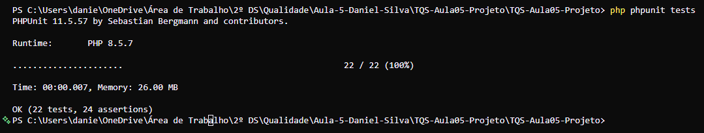

Evidência da Aula 6
Disciplina: Qualidade de Software
Aluno: Daniel Silva
Turma: 2º DS
Data: 23/11/2026
1. Objetivo da atividade
O objetivo desta atividade foi executar e compreender testes unitários em PHP utilizando o PHPUnit.
2. Estrutura do projeto
-
src/Carrinho.php— classe do carrinho de compras; -
src/ValidadorPasse.php— classe para validar senhas; -
tests/CarrinhoTest.php— testes da classe Carrinho; -
tests/ValidadorPasseTest.php— testes da classe ValidadorPasse; -
phpunit— programa utilizado para executar os testes.
3. Execução dos testes
Para executar os testes, utilizei o seguinte comando no terminal:
php phpunit tests
Resultado obtido:
PHPUnit 11.5.57 by Sebastian Bergmann and contributors.
Runtime: PHP 8.5.7
...................... 22 / 22 (100%)
Time: 00:00.007, Memory: 26.00 MB
OK (22 tests, 24 assertions)
4. Testes realizados na classe Carrinho
- Verificação do total de um carrinho vazio;
- Verificação do total com um ou mais produtos;
- Contagem de artigos no carrinho;
- Verificação se o carrinho está vazio;
- Teste do desconto para estudantes;
- Teste de exceções para quantidade inválida;
- Teste de exceções para preço negativo.
5. Testes realizados na classe ValidadorPasse
- Senha com menos de 8 caracteres;
- Senha sem letra maiúscula;
- Senha sem número;
- Senha válida.
6. Evidência da execução
A imagem abaixo mostra a execução dos testes no terminal.

Caso a imagem não apareça, verifique se o arquivo se chama exatamente
captura-testes.png e está na mesma pasta deste HTML.
7. Conclusão
A atividade permitiu compreender a criação e a execução de testes unitários em PHP. Também foi possível verificar testes de retorno, testes de limites e testes de exceções utilizando o PHPUnit.